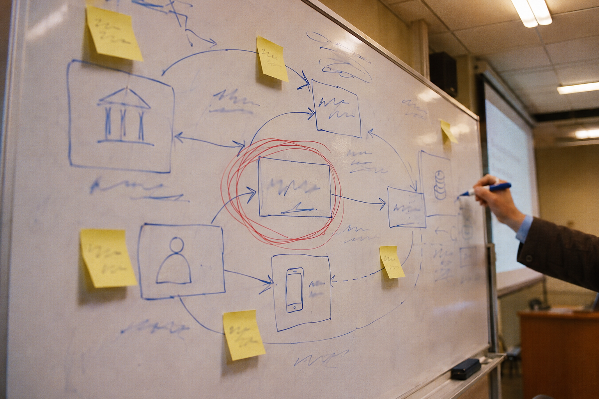
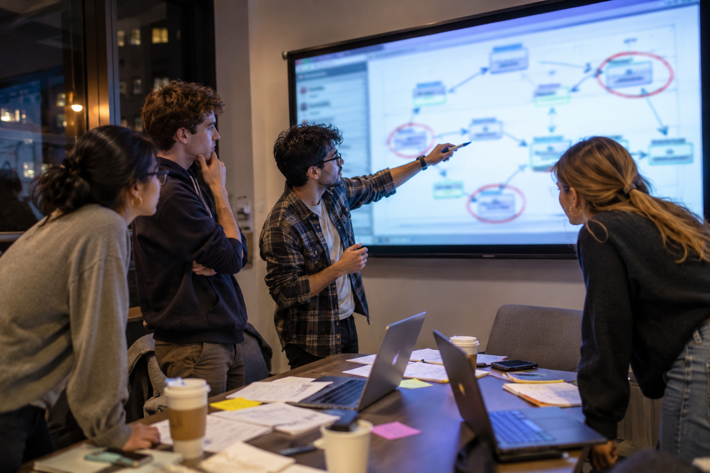

Коротко: я учусь искать деньги, которые пытаются спрятаться, и объяснять на человеческом языке, почему это не паранойя, а работа. Дальше — без красивых слов, как есть.
Как я сюда попал
Честно: случайно, но не жалею
На дне открытых дверей я пришёл смотреть экономический факультет, а ушёл с буклетом кафедры финансовой безопасности. На стенде сидел преподаватель и на салфетке рисовал, как мошенники дробят платежи на мелкие куски, чтобы никто не заметил. Салфетку я, к сожалению, не сохранил, но мысль запомнил: тут придётся думать, а не заучивать.
Родители спросили: «Это охранником, что ли?» Нет. Это скорее про то, чтобы замечать странное в отчётах раньше, чем оно станет заголовком новостей. Иногда скучно. Иногда — совсем нет. Если хочется понять, во что это превращается к третьему курсу, можно сразу прыгнуть в раздел про учёбу.

Та самая салфетка, только на доске: схема дробления платежей на первой лекции.
Что оказалось неожиданным
Думал, будет про деньги. Оказалось — про людей. Половина пар — это «а как вы это объясните руководству?» и «а как вы это докажете в суде?». Формулы есть, но чаще нужно уметь задать неудобный вопрос и не сдаться, когда тебе отвечают «так исторически сложилось».
Первая пара по праву — и сразу закон № 115-ФЗ, который читается как инструкция к стиральной машине на японском.
На информатике мы не «учили кнопки», а разбирали фишинговые письма, которые реально приходят бухгалтерам.
На финмониторинге дали выписку на 400 операций и попросили найти три подозрительные. Я нашёл четыре. Две были не те.
«Если вы нашли нарушение, но не можете объяснить его на человеческом языке, — вы его не нашли». — наш куратор, первая консультация по курсовой
Что реально делаем на парах
Предметы, которые пригодились
Список в учебном плане выглядит скучно, пока не начнёшь применять его к живым задачам. Вот что реально выстрелило.
Финансовый мониторинг — учимся видеть дробление платежей и схемы с фиктивными контрагентами.
Аудит и внутренний контроль — проверяем контрагентов, иногда быстрее, чем это делает служба безопасности компании, куда мы потом идём на практику.
Кибергигиена — многофакторная аутентификация, менеджеры паролей, разбор инцидентов. Да, это тоже про финансы: деньги теперь цифры.
Экономико-правовой анализ — читаем нормативку и учимся писать заключения, которые не стыдно показать.
Стресс-тесты — моё любимое. Дают сценарий «а что, если крупный клиент уйдёт завтра» и просят посчитать, когда кончится ликвидность. Считаешь, краснеешь и понимаешь, почему в отчётах у взрослых дядь и тёть такие серьёзные лица.
Типичный вечер перед сдачей: 400 строк, три подозрительные операции и один остывший кофе.
Инструменты, без которых никуда
Про «софт» говорят много, но по факту всё скромнее и надёжнее.
Excel и SQL — да, Excel всё ещё жив, и это не шутка.
Python — для тех, кто хочет автоматизировать поиск аномалий, а не щёлкать вручную.
BI-панели — чтобы показать начальнику одну понятную картинку вместо тридцати вкладок.
Голова и упрямство — без них первые три пункта бесполезны.
Практика: как это выглядит вживую
Киберучения «Белый щит — 2026»
Материалы к командному этапу обновили , а сам этап пройдёт . Три часа, один инцидент, четыре человека в команде и очень мало сна накануне.
В прошлом году мы провалили первый раунд: схему нашли, а заключение оформили так, что юрист команды сказал: «Ребят, это не доказательство, это настроение». В этом году обещали исправиться. Тренируемся писать коротко и по делу — для людей, которые будут читать это в одиннадцать вечера.

Учения: пока не нарисуешь цепочку — не поймёшь, где деньги свернули не туда.Что в сценарии этого года?
легенда о фиктивном поставщике с признаками дробления платежей;
поток транзакций, в котором спрятаны три аномалии;
итоговый отчёт для регулятора и короткая записка для руководства.